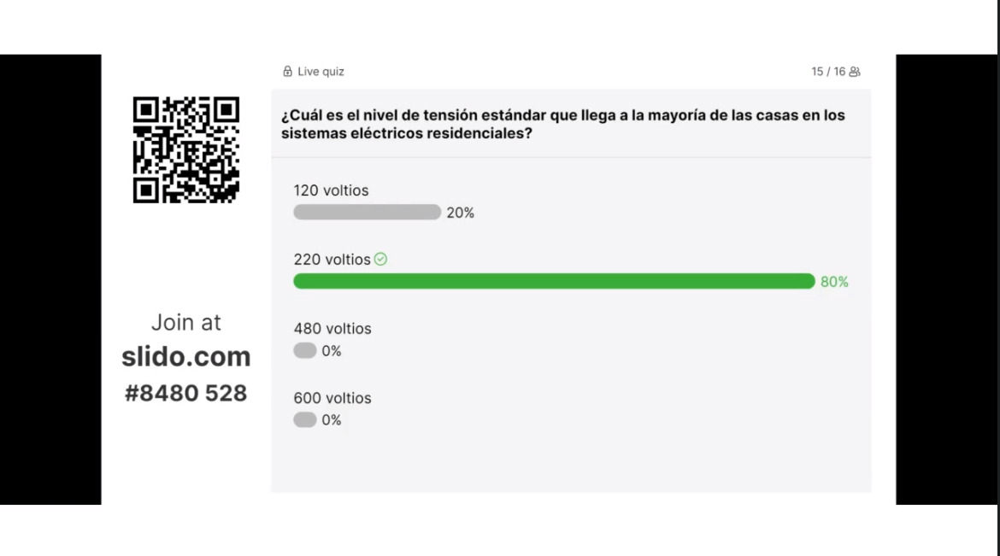
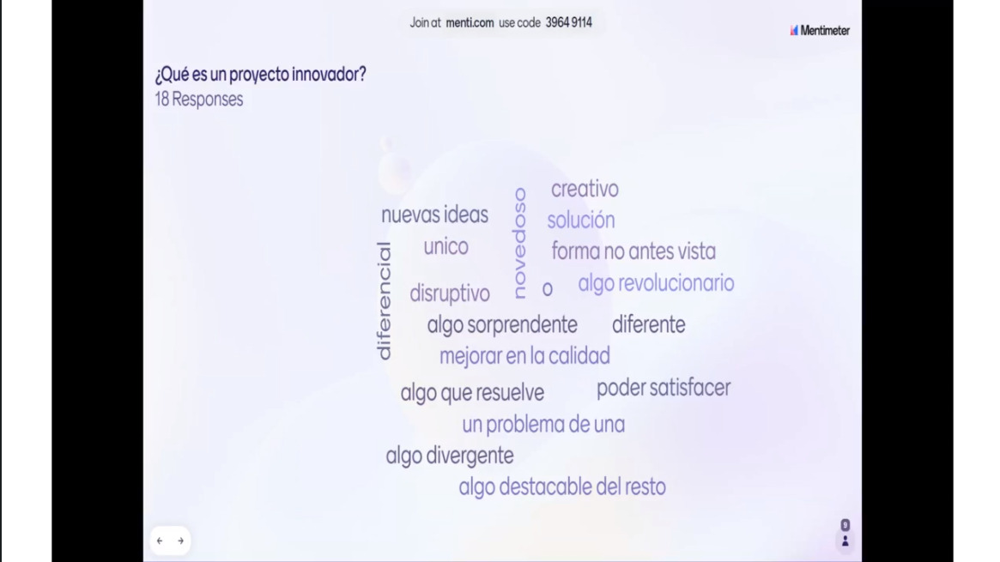

Semana 1
Primero, realizamos una evaluación de los conocimientos previos, resaltando las habilidades y el bagaje de conocimientos que cada miembro del grupo contribuye al proyecto. Luego, llevamos a cabo un análisis exhaustivo de proyectos innovadores, con un enfoque detallado en iniciativas como el regador automático, el alimentador automático y el Robot bartender. Durante esta fase, discutimos en profundidad las tecnologías y los conceptos involucrados en estos proyectos.
A continuación, definimos qué constituye un proyecto innovador y compartimos videos inspiradores que ilustran cómo concebir y desarrollar proyectos de este tipo. Finalmente, brindamos una introducción a diversas categorías de proyectos y sus aplicaciones en el mundo real."
